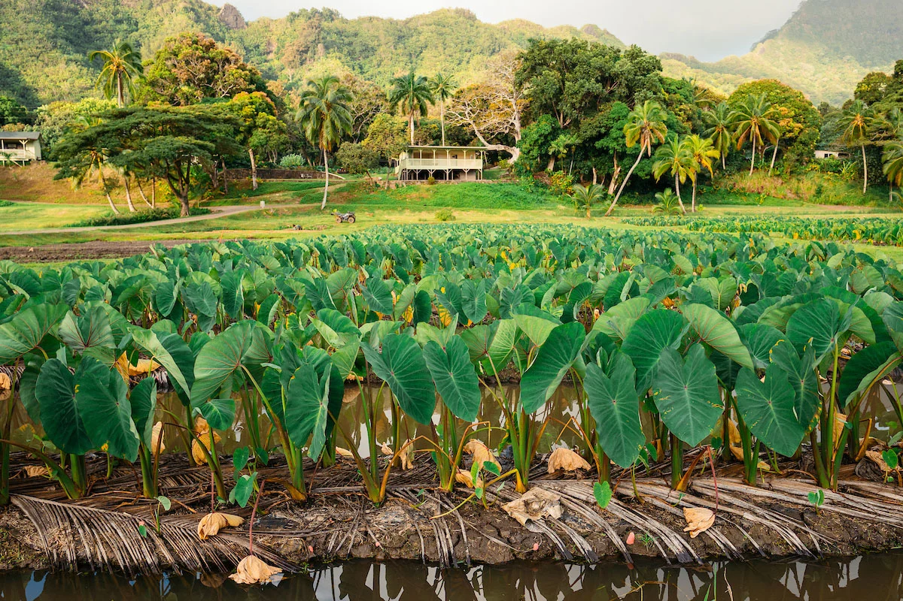
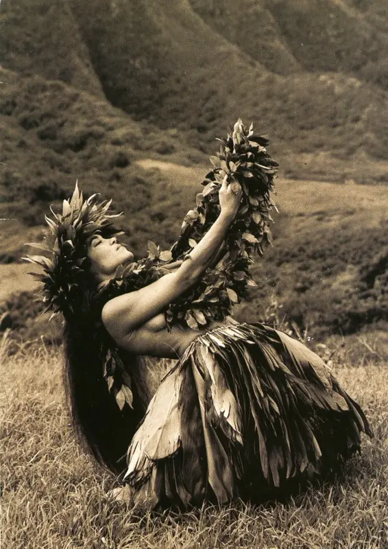
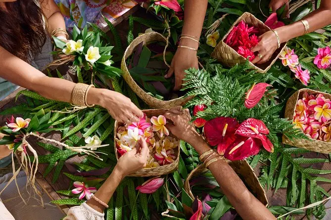
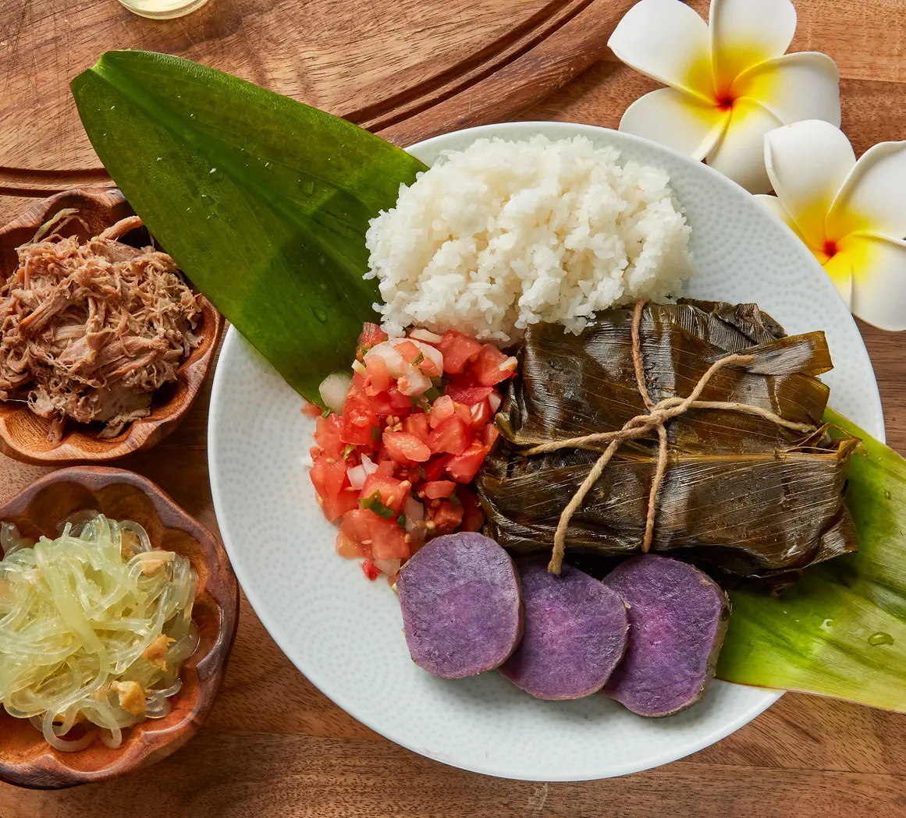

Aloha
Aloha is more than a greeting. It expresses love, compassion, kindness, and a way of treating others with respect.
Hawaiian culture is deeply connected to the land, ocean, community, and generations of knowledge passed down through families.
Learning about these traditions helps visitors understand Oahu beyond its beautiful scenery.
Aloha is more than a greeting. It expresses love, compassion, kindness, and a way of treating others with respect.

Mālama ʻāina means caring for the land. It reflects the responsibility to protect and respect the natural environment.
ʻOhana means family and emphasizes relationships, responsibility, and caring for one another.
Hawaiian traditions preserve stories, history, and cultural knowledge. Practices such as hula, traditional music, and lei making help share cultural identity across generations.
Hula combines movement, chant, and storytelling. Lei making can express affection, celebration, honor, and connection.


The Hawaiian language is an important part of cultural identity and heritage. Learning even a few words can encourage greater appreciation and understanding.
Hello, goodbye, love, and affection.
Thank you or gratitude.
Responsibility, privilege, and obligation.
Food brings families and communities together. Traditional Hawaiian foods include poi, laulau, kālua pig, and ʻulu.
Oahu's food culture also reflects the many communities that have shaped the island, including influences from Japan, China, the Philippines, and other places.

Respectful cultural learning begins with listening, following local guidance, supporting cultural practitioners, and caring for the places you visit.
Take time to learn the meaning behind traditions and recognize that Hawaiian culture is a living culture practiced and preserved today.
Explore Oahu